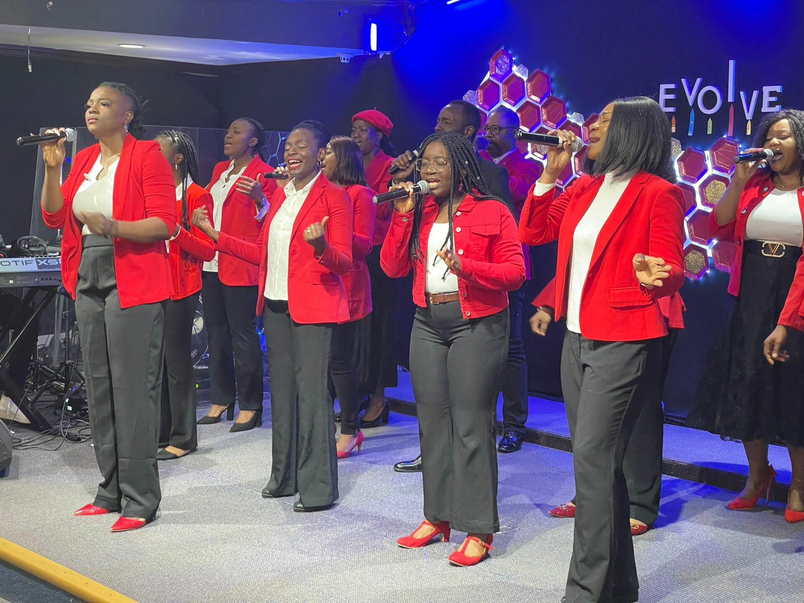
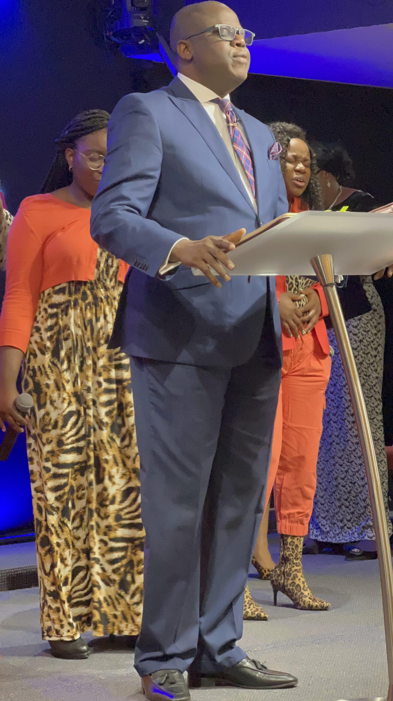

01
At MSC we BELIEVE that the blood of Jesus washes clean all repentant sinners hence we are fit to approach the MERCY SEAT of GOD.
At Mercy Seat Chapel we come together to obtain Mercy and Grace to actualize our vision. Hebrews 4:16.
MERCY SEAT CHAPEL is a mission of The Redeemed Christian Church of God (RCCG). We are bible-believing, multi-racial, loving and family oriented followers of Jesus Christ.
The church was founded in 1952 and since then, the church has grown to over 10,000 parishes worldwide with a total congregational strength of over one million people. The General Overseer of the church is Pastor E.A. Adeboye.
Let us then fearlessly and confidently and boldly draw near to the throne of grace, that we may receive mercy and find grace to help in good time for every need.Hebrews 4:16

At MSC we BELIEVE that the blood of Jesus washes clean all repentant sinners hence we are fit to approach the MERCY SEAT of GOD.
At MSC we BELIEVE that as children of God, we are over comers by the MERCIES of God which he intends for believers so as to experience the life of GRACE He has promised us all.
At MSC we BELIEVE that every believer should be in a growing relationship with Jesus by obeying God’s Word; hence through the Holy Spirit we decrease in SELF and increase in HIM, as we are being conformed to the image of Christ.
At Mercy Seat Chapel, our vision is to build a Christ-centered family where people encounter God’s mercy and grace, grow as disciples, develop meaningful relationships, and discover their purpose in serving God and others. Five foundational values guide who we are and everything we do.
Jesus Christ is at the heart of everything we do. Through worship, prayer, and biblical teaching, we seek to honour Him, reflect His love, and live according to His Word.
We are committed to helping people grow into mature followers of Christ through purposeful teaching, mentorship, spiritual development, and opportunities to put their faith into action.
We believe church is more than a gathering; it is a spiritual family. We cultivate meaningful relationships built on love, unity, encouragement, accountability, and genuine care for one another.
We believe everyone has gifts, talents, and resources entrusted to them by God. We encourage faithful stewardship and joyful service, empowering individuals to contribute meaningfully to the church and wider community.
We are called to share the Gospel and demonstrate Christ’s love beyond the walls of the church through evangelism, compassion, community engagement, and practical acts of service.
At Mercy Seat Chapel, growth is about more than numbers. It is about building lasting relationships, reaching new people, helping everyone find a place to belong, and creating opportunities for spiritual transformation. Our approach to growth is anchored in four pillars.
Building a Caring Church Family
We strengthen relationships through genuine fellowship, prayer, encouragement, celebrating special moments, and supporting one another through life’s different seasons. Through our ministries and departments, we create opportunities for everyone to experience a true sense of belonging.
Sharing the Message of Hope
We extend our reach through personal evangelism, community outreach, digital media, and creative communication. By sharing our faith, church activities, and testimonies, we invite more people to experience the love of Christ and become part of our church family.
Helping Everyone Find Their Place
We believe everyone should have the opportunity to belong, grow, and contribute. Through membership classes, ministry groups, training, and leadership development, we help visitors and members discover meaningful connections and opportunities to serve.
Creating Opportunities for Transformation
Our worship services, teaching programs, conferences, youth gatherings, family events, empowerment initiatives, and community outreach activities provide opportunities to deepen faith, strengthen relationships, discover purpose, and make a difference.
Whether you’re visiting for the first time or looking for a church family, we want you to feel welcomed, supported, and connected. Our membership journey is designed to help you discover Mercy Seat Chapel, grow in your relationship with Christ, and find meaningful ways to belong and serve.
Your journey begins with a warm welcome. Our Welcome & Follow-Up Team is here to connect with you, answer your questions, introduce you to church activities, and help you feel at home.
As you get to know our church family, we invite you to learn more about our vision, values, and membership opportunities, helping you prayerfully decide whether Mercy Seat Chapel is where you would like to grow.
Our monthly membership classes introduce you to the church’s beliefs, vision, ministries, and opportunities for spiritual growth. You’ll also learn about SoulCare and the different ways we support our members.
Through the SoulCare Directorate, we help you connect with a fellowship group or ministry community where you can build friendships, receive encouragement, and grow alongside others.
Everyone has something valuable to contribute. We encourage members interested in serving to explore ministry opportunities, receive relevant training, and develop their gifts through pathways such as the Workers Academy.
We celebrate every step of your spiritual journey, from finding a church family to becoming actively involved in ministry. Together, we continue growing in faith, building relationships, and making a difference for Christ.
Your journey of faith, fellowship, and purpose starts here. We would love to welcome you, help you connect, and walk alongside you as you grow in Christ.
In all sphere of life, and certainly in the Christian life too, we need to be inspired, challenged and given a vision of something better, grander and more challenging. This is obviously true in the sporting world where the phrase “raise the bar” comes into play.
Whether it is the pole vaulter or the high jumper, the bar is raised so that an even greater sporting accomplishment can be attempted. And all great athletes crave this: they don’t want to settle for second best, or that which is easily obtainable. They press on for the best, and in this case, the highest. They are not interested in the ordinary, but want to be the very best in their sport, and raise the bar even higher. They want to lead the way and set the standard. Life is meant to be like that, especially the Christian life.
Christians should not be ordinary or average in any endeavor in life. We have great potential inside us. There are things God wants each of us to do that no one else can do. And through Christ, we have been given everything we need to be successful. However, too many Christians have become satisfied with where they are and never go any further. Some never come close to achieving their potential.
We don’t have to settle for average. Living an average life is like talking on a cell phone when it only has a couple of bars on the screen. It isn’t receiving a very strong signal. The phone is operating, but it cuts in and out or drops calls completely. God wants us to raise the bars in our lives. He has a way for us to live on a level of full bars.
We need to raise the bar. Indeed, with Jesus Christ as our ultimate standard, and his command that we be perfect as our Father in heaven is perfect (Matthew 5:48), every single Christian has to continuously set the bar as high as it can go.
Welcome to Mercy Seat Chapel.

At Mercy Seat Chapel, our vibrant community of dedicated volunteers, ministry leaders, and pastors is led by Pastor Olu Olarinde, our Lead Pastor, alongside his wife, Pastor Ola Olarinde. Together, they are committed to building a Christ-centered community where people encounter God’s mercy and grace, grow in faith, and discover their God-given purpose.
Join us on Sundays at 10:00 AM in person, or worship with us online.